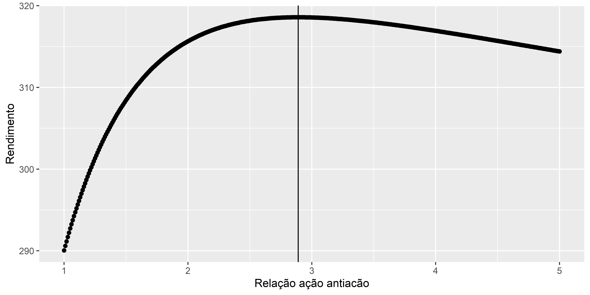

O conhecimento da evapotranspiração acumulada por plantas anuais ao longo do seu ciclo de vida pode ser uma ferramenta importante na tomada de decisão quando se considera a viabilidade econômica da cultura. Este conhecimento pode ajudar a entender o quanto as plantas, submetidas a um manejo específico, podem evapotranspirar ao final do ciclo. Esta informação auxilia na estimativa da quantidade de uma variável de produção, por exemplo a massa de matéria fresca, além de indicar um período mais interessante para a realização da sua colheita. O objetivo deste capítulo é, a partir da estimativa da evapotranspiração diária ao longo do ciclo, modelar a evapotranspiração acumulada durante um período da vida de plantas anuais. Para fazer isto, precisamos entender que o comportamento da variável resposta, ou seja, a evapotranspiração acumulada, ao longo do tempo não é linear, e ter em mente que as varías observações realizadas em uma mesma unidade experimental apresentam correlações e que estas correlações são mais intensas quanto mais próximas temporalmente são as medidas. Esta compreensão nos remete a análise de dados longitudinais a partir dos modelos não lineares de efeitos mistos.
Uma forma extremamente interessante de investimento a longo prazo, em que espera-se alta rentabilidade com riscos controlados, é trabalhar o conceito de ações e antiações.
Sabemos que uma ação representa a menor parcela negociável do capital de uma empresa. Os valores destas ações sofrem altas e baixas e há riscos de ganhos e perdas de capital. Como antiações podemos entender aquilo que nos proteje das quedas das ações. Os ativos que melhor se encaixam nesta classe são o dolar e o ouro.
A ideia é que quando as ações estão em alta as antiações podem estar em queda e vice-versa. Entretanto, a queda atinge valores de no máximo de 100% enquanto que as altas são ilimitadas. O que normalmente ocorre são maiores altas com relação as quedas.
Mas qual a relação entre ações e antiações? 50% de cada? 75% de ações e 25% de antiações? É sobre isto que vamos conversar aqui.
O conjunto de dados que usaremos refere-se aos rendimentos anuais da \(B3\) para três ativos: ações, dolar e ouro desde 2003 a 2015 e estão apresentados abaixo.
ano acoes dolar ouro
1 2003 97.33 -18.31 -0.77
2 2004 17.81 -8.14 -2.85
3 2005 27.71 -11.96 2.93
4 2006 32.93 -8.63 12.69
5 2007 43.65 -16.69 11.26
6 2008 -41.22 30.02 32.13
7 2009 82.66 -24.69 -3.05
8 2010 1.04 -4.79 32.26
9 2011 -18.11 12.27 15.85
10 2012 7.40 9.95 15.26
11 2013 -15.50 15.31 -17.35
12 2014 -2.91 12.51 12.04
13 2015 -13.31 49.04 33.63Como antiações usaremos os ativos dolar e ouro, sempre na mesma proporção. Por exemplo, se tivermos a relação \(3:1\), ou seja, três partes de ações (75%) para uma de antiações (25%) usaremos 12.5% de dolar e 12.5% de ouro.
O rendimento de cada ativo foi calculado usando a ideia de juros compostos.
As porporções estudadas foram deste \(1:1\) até \(5:1\), variando de 0.01. Como exemplo, as cinco primeiras relações foram \(1.00:1\), \(1.01:1\), \(1.02:1\), \(1.03:1\), \(1.04:1\), \(1.05:1\).
Dessa forma, as quantidades de ações para as cinco primeiras relações foram 0.5, 0.5025, 0.505, 0.5074, 0.5098. E as de dolar e ouro foram 0.25, 0.2488, 0.2475, 0.2463, 0.2451. Com isto, os rendimentos para as cinco primeiras relações entre ação e antiação foram 290.0468, 290.6065, 291.1559, 291.6949, 292.2239.
Assim, obtivemos que o maior rendimento foi de 318.5829, ocorrido quando a relação entre ação e antiação foi de 2.89.
Por fim, os resultados podem ser vistos graficamente (a reta vertical é o ponto 2.89).

Este artigo é um estudo sobre ações e antiações. Caso encontre erros, queira fazer comentários, ou troca uma ideia sobre o assunto, por favor, me escreva: omarcnpereiraead@gmail.com↩︎